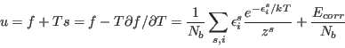
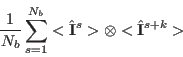

Next: mcdiff - calculate and Up: mcphas - calculation of Previous: Options for a running Contents Index
Note: there is no natural criteria for deciding, if one spin-configuration is different from another one. Therefore the list of ”different” spin-configurations is dependent on the meaning of ”different”.
The program McPhase decides whether a spin-configuration is
different from another by a simple criteria, namely by the
angle between the spins. Comparing two spin configurations it calculates
the angle between corresponding spins and if for one spin the
angle is not small, the configuration is treated as a different
configuration. Therefore for example a ferromagnet with moments
in  has a different spin configuration than a ferromagnet with
moments in
has a different spin configuration than a ferromagnet with
moments in  direction.
direction.
|  | (20) |
|  | (21) |
Exercises: